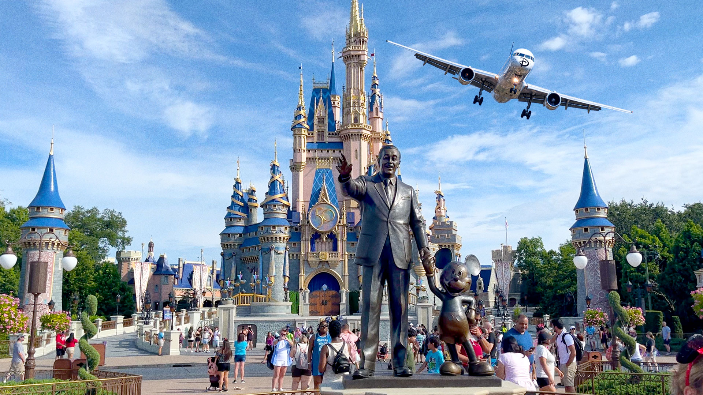
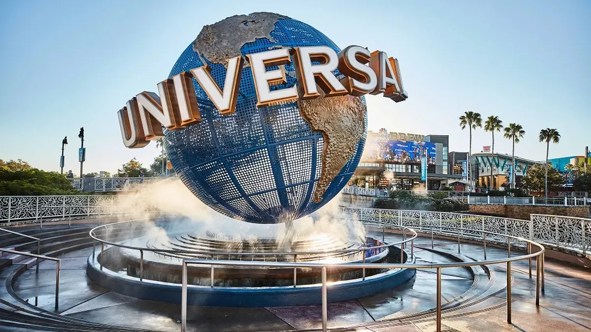
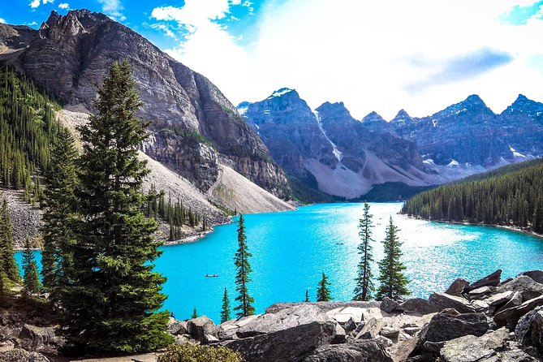

Disney
Disney es mi lugar favorito en el mundo porque cada vez que entro a sus parques, siento que estoy entrando a un mundo mágico donde los sueños se hacen realidad. Desde el momento en que cruzo las puertas, me sumerjo en un universo de fantasía donde los personajes de mis películas favoritas cobran vida, las atracciones despiertan mi emoción y la magia está en cada rincón. Es un lugar donde la alegría se contagia, donde la imaginación se desborda y donde los recuerdos se crean para toda la vida. En Disney, no importa la edad que tengas, siempre te transporta a una época de inocencia y felicidad pura. Es más que un parque de diversiones, es un refugio donde puedo dejar atrás todas mis preocupaciones y simplemente disfrutar del encanto que lo hace único. ¡No hay otro lugar en el mundo que pueda igualar la magia que siento cuando estoy en Disney!
Universal Studios
Universal Studios es uno de mis lugar favorito, especialmente porque amo los parques de atracciones. Cada vez que piso uno de sus parques, siento una emoción indescriptible que me recorre de pies a cabeza. La combinación de la adrenalina de las atracciones con la magia del cine y la televisión es simplemente incomparable. Además, la atención al detalle en cada rincón del parque es impresionante, transportándome a los universos cinematográficos que tanto adoro. En Universal Studios, la diversión nunca termina y siempre encuentro algo nuevo para emocionarme.
Los Angeles
Los Angeles está llena de vida, cultura y actividades emocionantes para explorar. Más allá de la ciudad, sus numerosas playas ofrecen un refugio perfecto para escapar del ajetreo urbano y relajarse. Como aficionado a los conciertos y a explorar diversos géneros musicales, encuentro que esta ciudad es excepcionalmente diversa y perfecta para este tipo de experiencias, ya que atrae a una gran variedad de artistas.

Museo de Historia Natural en Nueva York
El Museo de Historia Natural de Nueva York es uno de mis lugares favoritos debido a su fascinante conexión con la saga de películas "Una Noche en el Museo". Recorrer sus pasillos y admirar sus exhibiciones me hace revivir momentos emocionantes de las películas, donde los personajes históricos cobran vida durante la noche. Además de esta conexión especial, el museo en sí es una joya cultural, con exhibiciones impresionantes que abarcan desde la era de los dinosaurios hasta civilizaciones antiguas y la vida marina. Es un lugar donde puedo aprender, maravillarme y dejar volar mi imaginación, todo al mismo tiempo.

Rocky Mountain en Vancouver
Las Montañas Rocosas en Vancouver son uno de mis destinos preferidos, y es que amo la naturaleza y todo lo que ofrece. La imponente belleza de las montañas, la frescura del aire y el murmullo de los arroyos crean una atmósfera serena que me reconecta con lo esencial. Además, explorar este paraíso natural me permite desconectar del ajetreo de la vida cotidiana y sumergirme en un mundo donde el tiempo parece detenerse. Ya sea caminando entre árboles, observando la vida silvestre o simplemente contemplando las impresionantes vistas panorámicas, las Montañas Rocosas en Vancouver siempre me brindan la paz y la armonía que necesito para recargar energías y renovar mi espíritu.
